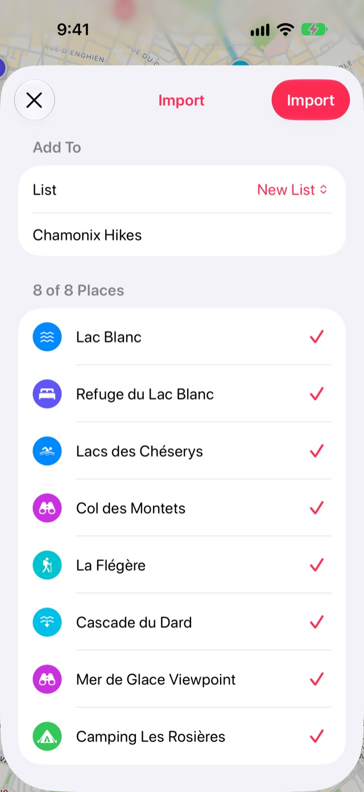

Cómo importar un archivo GPX a Stops
La mayoría de las apps de senderismo, ciclismo y GPS pueden exportar GPX, y Stops también. Los waypoints de un archivo GPX se convierten en paradas, con sus nombres, notas y fechas.
- Gratis
- Unos 2 minutos
- iPhone y iPad
Lo que necesitas
- Un archivo GPX guardado en la app Archivos, en iCloud Drive o en tu iPhone.
Paso a paso
-
Guarda el archivo GPX en Archivos
Exporta el GPX desde la app o el sitio web de donde viene y guárdalo en Archivos. Stops importa los waypoints; un archivo que solo tiene una ruta trae los puntos de la ruta en su lugar.
-
Abre Importar en Stops
Abre Diario con el botón del libro al final de la barra de pestañas y toca el engrane de Configuración. Elige Importar, luego Archivo GPX, y selecciona el archivo.

-
Revisa los lugares e impórtalos
La lista lleva el nombre del archivo. Desmarca lo que no quieras y toca Importar.

Bueno saber
- El tipo de un waypoint se convierte en su categoría cuando coincide con una de las categorías de Stops, como Mirador, Campamento o Cascada. Un GPX exportado desde Stops vuelve exactamente como salió.
- Los tracks grabados se omiten: Stops guarda lugares, no recorridos.
- Stops exporta KML para Google Earth y My Maps, pero solo importa GPX.
Más guías
Exporta tus lugaresLleva tus paradas, listas y Cronología a donde quieras como GPX, KML o CSV.Lugares guardados de Google MapsTrae tus lugares destacados y guardados de Google Maps con Google Takeout.Guías de Mapas de AppleConvierte una guía que creaste en Mapas de Apple en una lista de paradas.
Obtén Stops
Guarda los lugares a los que volverás, en iPhone, iPad, Mac y Apple Watch.